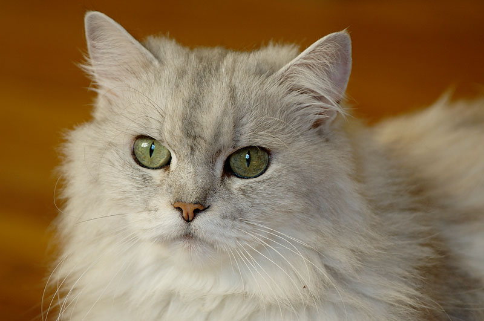

Kucing persia adalah ras kucing domestik berbulu panjang dengan karakter wajah bulat dan moncong pendek. Namanya mengacu pada Persia, nama lama Iran, di mana kucing serupa ditemukan. Sejak akhir abad 19, kucing jenis ini dikembangkan di Britania Raya dan Amerika Serikat usai Perang Dunia II. Di Britania Raya, ras ini disebut kucing bulu panjang persia, dibagi dalam dua jenis, yaitu chinchilla dengan warna perak cerah dan yang agak gelap. Seperti halnya dengan ras siam, telah ada upaya oleh beberapa peternak untuk melestarikan ras kucing yang lebih tua, ras tradisional, yang memiliki moncong lebih jelas, yang lebih akrab dengan masyarakat umumnya. Pembiakan selektif yang dilakukan oleh peternak telah memungkinkan pengembangan berbagai warna bulu, tetapi juga menyebabkan makin datarnya wajah, yang mungkin membawakan sejumlah masalah kesehatan. Penyakit ginjal polikistik turunan lazim dialami oleh ras ini, yang mempengaruhi hampir separuh populasinya di beberapa negara.